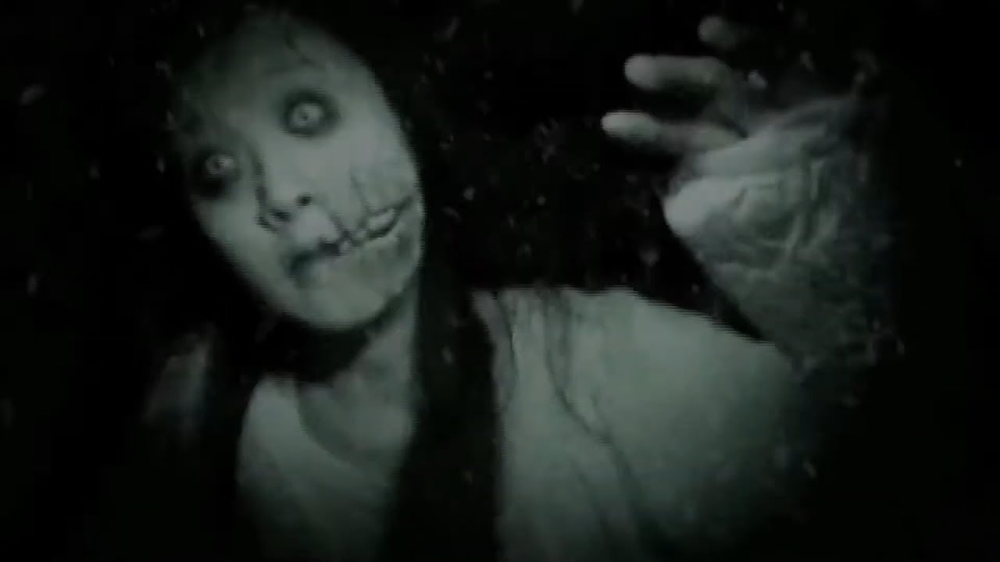

Исследуйте тьму
Добро пожаловать в ужасающий мир, где духи и призраки бродят по ночам. Остерегайтесь темных углов и шумов в ночи, ведь здесь ничто не так, как кажется. Возможно, вы столкнетесь с настоящими призраками... Не забудьте оглянуться через плечо...
Если вы хотите связаться с нами и поделиться своими ужасающими историями, то вы можете отправить нам сообщение или позвонить по указанным контактам. Осторожно, наши линии могут быть "загружены" вне дня... Оставайтесь на связи, но помните, кто-то всегда слушает...
